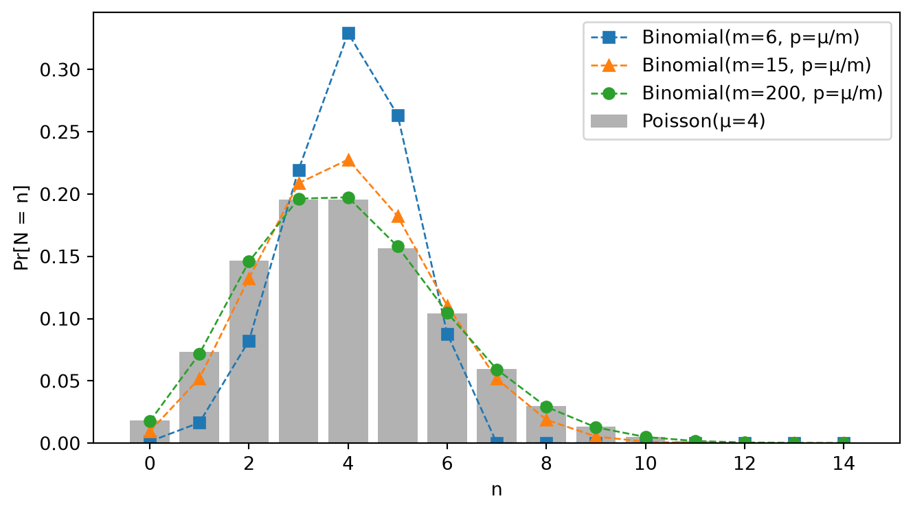
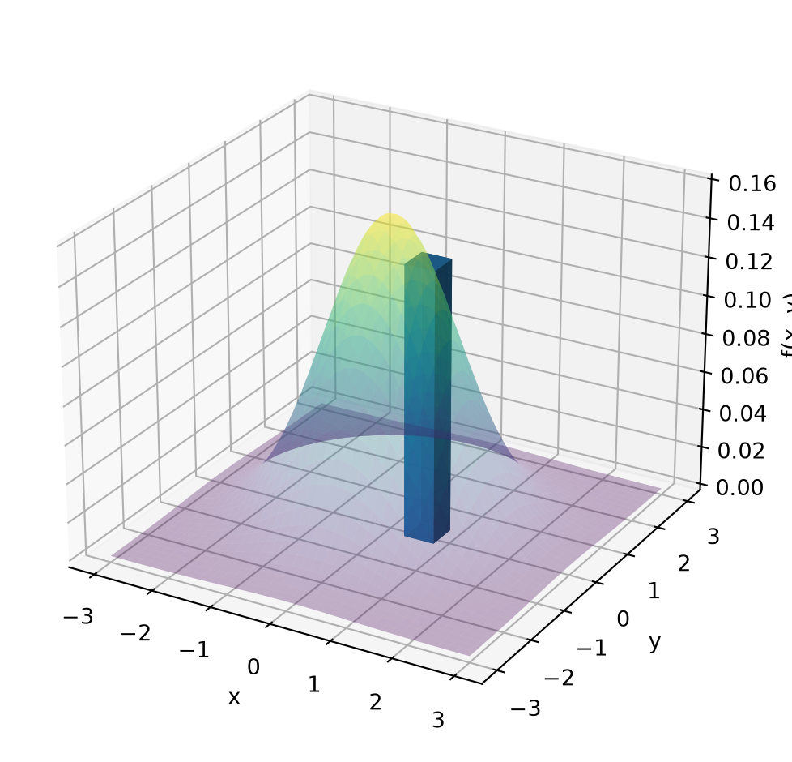
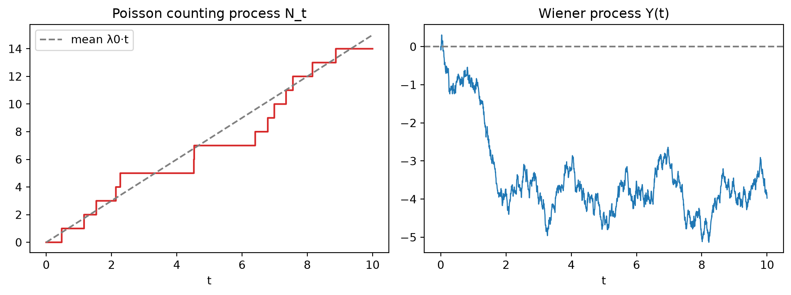
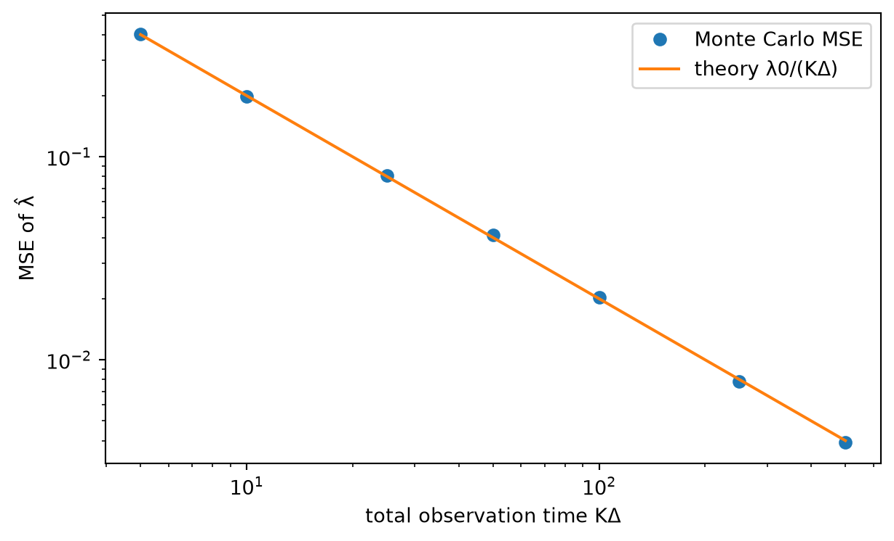
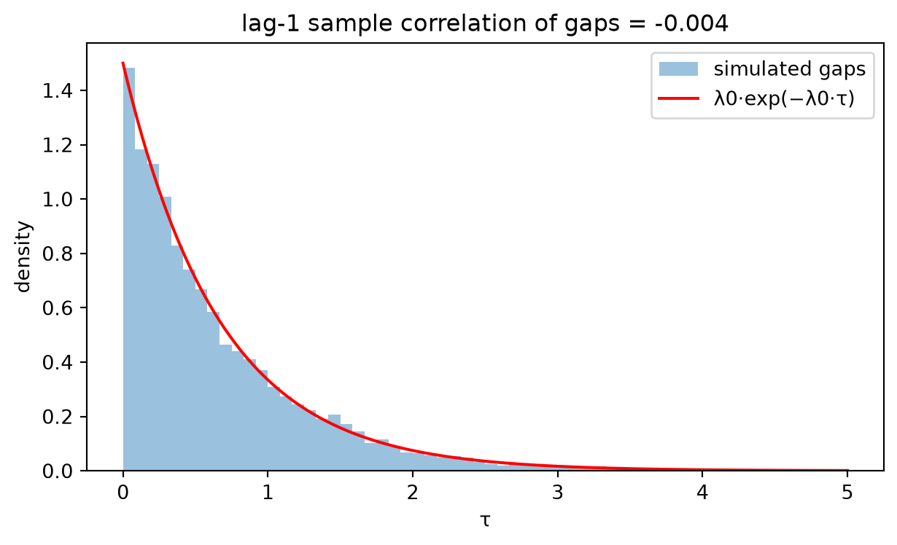

확률과정 (Stochastic Processes) - III
Random Signal Theory — 포아송 계수과정의 평균·분산·자기상관, PGF, 도착시각 통계와 표본함수밀도, 위너 과정과의 비교, 에르고딕성, 도착간격의 마르코프 성질
1 들어가며
1.1 확률신호론이 다루는 두 질문
결정론적 신호 \(\cos t\), \(\sin t\)만 다룰 때는 신호 자체를 분석하면 충분했다. 그러나 실제 관측은 대개
\[ y(t) = s(t) + n(t) \]
꼴이고, 여기서 두 가지 질문이 생긴다.
- 잡음 \(n(t)\)는 확률과정이다. 확률과정이란 무엇이고, 어떤 특성(평균, 자기상관, 분포)으로 기술하며, 어떤 도구로 분석하는가?
- 신호 \(s(t)\) 자체도 확률적일 수 있다. 예를 들어 위상이 균일분포를 따르는 \(\cos(\omega t + \Theta)\)는 결정론적 함수가 아니라 확률과정이다. 관측 \(y(t)\)만 보고 파라미터를 추정(estimation)하거나, \(y(t)\)가 가설 \(H_0\)에서 왔는지 \(H_1\)에서 왔는지 검출(detection)하려면 확률과정의 기초가 필요하다.
이 문서는 그 기초 중 포아송 과정(Poisson process)을 다룬다.
1.2 표본화 정리 복습 (짧게)
대역폭이 \(W\)인 기저대역 스펙트럼을 표본화 주파수 \(f_s\)로 표본화할 때, \(f_s > 2W\)이면 복제된 스펙트럼들이 겹치지 않으므로 저역통과필터로 원래 기저대역 스펙트럼을 복원할 수 있다. 그렇지 않으면 복제 스펙트럼이 겹치는 aliasing이 생긴다.
그 이유는 표본화가 시간영역에서 임펄스 열과의 곱이고, 임펄스 열의 푸리에 변환이 다시 임펄스 열이므로, 주파수영역에서는 원 스펙트럼과 임펄스 열의 컨볼루션, 즉 \(f_s\) 간격의 스펙트럼 복제가 되기 때문이다.
1.3 포아송 과정의 두 관점
| 관점 | 질문 | 확률변수 | 값의 범위 |
|---|---|---|---|
| Count statistics | 구간 \((t_1,t_2]\)에서 사건이 몇 개 일어났는가? | \(N_{t_1,t_2}\) | \(\{0,1,2,\dots\}\) |
| Time of occurrence | 사건이 언제 일어났는가? | \(\mathbf W=(W_1,\dots,W_n)\) | 순서화된 실수 |
앞부분(2~5장)은 count statistics, 뒷부분(6~9장)은 time of occurrence를 다룬다.
2 포아송 과정의 정의와 카운트 분포
2.1 미소구간 공리
강도(rate) \(\lambda_0>0\)인 포아송 계수과정 \(\{N_t : t\ge 0\}\)은 다음 세 성질로 정의된다.
공리 1 (독립 증분, independent increments). 겹치지 않는 구간의 카운트는 서로 독립이다. \[ N_{a,b} \perp\!\!\!\perp N_{c,d}, \qquad (a,b]\cap(c,d]=\varnothing. \]
공리 2 (강도). 길이 \(h\)인 구간에서 사건이 정확히 1개 일어날 확률은 \[ \Pr[N_{t,t+h}=1] = \lambda_0 h + o(h). \]
공리 3 (희소성, orderliness). 같은 구간에서 2개 이상 일어날 확률은 \[ \Pr[N_{t,t+h}\ge 2] = o(h). \]
여기서 \(o(h)\)는 \(\displaystyle\lim_{h\to 0}\frac{o(h)}{h}=0\)을 만족하는 항, 즉 \(h\)보다 빨리 0으로 가는 나머지를 뜻한다. 공리 2, 3으로부터 자동으로 \[ \Pr[N_{t,t+h}=0] = 1-\lambda_0 h + o(h). \]
직관. 아주 짧은 시간에는 사건이 기껏해야 하나이고, 그 확률은 시간 길이에 선형으로 비례한다.
2.2 Homogeneous의 의미
Homogeneous(균질한)는 강도가 시간에 대해 균질하다, 즉 \(\lambda(t)\equiv\lambda_0\)로 시간축의 모든 지점이 동등하다는 뜻이다.
- HPP (Homogeneous Poisson Process): \(\lambda(t)\equiv\lambda_0\) (상수)
- NHPP (Non-Homogeneous Poisson Process): \(\lambda(t)\)가 시간의 함수
“균질하다”는 것은 시간축을 평행이동해도 통계적 성질이 변하지 않는다는 뜻이며, 이는 곧 뒤에서 볼 정상 증분(stationary increments) 성질과 대응된다. Homogeneous Markov chain이 “전이확률이 시간에 의존하지 않는” 체인을 뜻하는 것과 같은 맥락이다.
2.3 PMF의 유도: 이항분포의 극한
\([0,t]\)를 길이 \(\Delta t = t/m\)인 \(m\)개 조각으로 나누자. 공리에 의해 각 조각의 카운트 \(X_k\)는 (근사적으로) 0 또는 1이고 \[ \Pr[X_k=1]\approx \frac{\lambda_0 t}{m}, \qquad \Pr[X_k=0]\approx 1-\frac{\lambda_0 t}{m}, \] 조각들은 서로 독립이다. 따라서 \(N_t\approx\sum_k X_k \sim \text{Binomial}(m,\ p=\lambda_0 t/m)\)이고 \[ \Pr[N_t=n] = \underbrace{\frac{m(m-1)\cdots(m-n+1)}{n!}}_{(\mathrm{i})} \underbrace{\left(\frac{\lambda_0 t}{m}\right)^n}_{(\mathrm{ii})} \underbrace{\left(1-\frac{\lambda_0 t}{m}\right)^{m}}_{(\mathrm{iii})} \underbrace{\left(1-\frac{\lambda_0 t}{m}\right)^{-n}}_{(\mathrm{iv})}. \]
\(n\)을 고정하고 \(m\to\infty\)로 보내면:
- (i)·(ii) \(= \dfrac{(\lambda_0 t)^n}{n!}\cdot\dfrac{m}{m}\cdot\dfrac{m-1}{m}\cdots\dfrac{m-n+1}{m} \;\to\; \dfrac{(\lambda_0 t)^n}{n!}\)
- \(\to e^{-\lambda_0 t}\) (표준 극한 \((1+x/m)^m\to e^x\))
- \(\to 1\)
\[ \boxed{\Pr[N_t=n] = \frac{(\lambda_0 t)^n}{n!}e^{-\lambda_0 t}, \qquad n=0,1,2,\dots} \]
이것이 “시행 수 \(m\to\infty\), 성공확률 \(p\to 0\), 평균 \(mp=\lambda_0 t\) 고정”인 드문 사건의 법칙(law of rare events)이다.
2개 이상 발생을 무시해도 되는 이유. 전체 구간에서 “어느 조각에서든 2개 이상”일 확률의 합은 \[ \sum_{k=1}^m \Pr[X_k\ge 2] = m\cdot o(\Delta t) = t\cdot\frac{o(\Delta t)}{\Delta t}\;\to\;0, \] 이므로 \(m\to\infty\) 극한에서 “각 조각은 0 또는 1”이라는 근사가 정확해진다.
2.4 구간 카운트 \(N_{t_1,t_2}\)
\[ N_{t_1,t_2} := N_{t_2}-N_{t_1}, \qquad 0\le t_1<t_2. \]
HPP. 정상 증분에 의해 \(N_{t_1,t_2}\overset{d}{=}N_{t_2-t_1}\)이므로 \(t\)를 \(t_2-t_1\)로 바꾸면 된다. \[ \Pr[N_{t_1,t_2}=n] = \frac{\big(\lambda_0(t_2-t_1)\big)^n}{n!}e^{-\lambda_0(t_2-t_1)}. \]
일관성 확인. \(N_{t_2}=N_{t_1}+N_{t_1,t_2}\)에서 두 항은 독립이고, 포아송의 가법성에 의해 \(\lambda_0 t_1+\lambda_0(t_2-t_1)=\lambda_0 t_2\)가 되어 \(N_{t_2}\sim\text{Poisson}(\lambda_0 t_2)\)와 정확히 맞는다.
NHPP. \(\lambda_0(t_2-t_1)\) 자리에 누적 강도(cumulative intensity)를 넣는다. \[ \Lambda_{t_1}^{t_2} := \int_{t_1}^{t_2}\lambda(u)\,du, \qquad \Pr[N_{t_1,t_2}=n] = \frac{\big(\Lambda_{t_1}^{t_2}\big)^n}{n!}e^{-\Lambda_{t_1}^{t_2}}. \]
왜 적분인가. 구간을 미소조각 \(du\)로 쪼개면 각 조각은 독립인 Bernoulli\((\lambda(u_k)\Delta u)\)이고, 합의 평균은 \(\sum_k\lambda(u_k)\Delta u\to\int_{t_1}^{t_2}\lambda(u)\,du\)이다. \(\lambda\equiv\lambda_0\)이면 \(\lambda_0(t_2-t_1)\)로 돌아가므로 HPP는 특수한 경우다. 또한 \(\Lambda(t):=\int_0^t\lambda(u)\,du\)로 두면 \(\Lambda_{t_1}^{t_2}=\Lambda(t_2)-\Lambda(t_1)\)로, 카운트의 증분 \(N_{t_2}-N_{t_1}\)과 같은 구조를 가진다.
3 평균, 분산, 생성함수
3.1 평균: 급수로 직접 계산
\[ \mathbb E[N_t] = \sum_{n=0}^\infty n\frac{(\lambda_0 t)^n}{n!}e^{-\lambda_0 t}. \]
- \(n=0\) 항은 앞의 \(n\) 때문에 0이므로 합을 \(n=1\)부터 시작한다.
- \(\lambda_0 t\)를 밖으로 빼고 \(m=n-1\)로 지수를 옮긴다. \[ \mathbb E[N_t] = \lambda_0 t\, e^{-\lambda_0 t}\sum_{m=0}^\infty\frac{(\lambda_0 t)^m}{m!}. \]
- 지수함수 급수 \(\sum_m x^m/m! = e^x\)를 쓰면 \[ \boxed{\mathbb E[N_t]=\lambda_0 t}, \qquad \mathbb E[N_{t_1,t_2}] = \lambda_0(t_2-t_1)\ \ (\text{NHPP: } \Lambda_{t_1}^{t_2}). \]
해석. 기대 카운트 = 강도 × 시간. \(\lambda_0\)가 클수록, 관측 시간이 길수록 더 많은 사건을 본다.
3.2 확률생성함수 (PGF)
3.2.1 정의와 세 가지 성질
음이 아닌 정수값 확률변수 \(X\)에 대해 \[ G_X(z) := \mathbb E[z^X] = \sum_{n=0}^\infty \Pr[X=n]\,z^n. \] 확률질량을 계수로 갖는 멱급수이며 \(|z|\le 1\)에서 항상 수렴한다.
(1) 분포 전체를 담는다 (계수 복원). \[ \Pr[X=n] = \frac{G_X^{(n)}(0)}{n!}. \] \(z^k\)를 \(n\)번 미분하면 \(k<n\)인 항은 0, \(k=n\)인 항은 상수 \(n!\), \(k>n\)인 항은 \(\frac{k!}{(k-n)!}z^{k-n}\)이 된다. 여기에 \(z=0\)을 넣으면 \(k>n\)인 항도 \(0^{k-n}=0\)으로 사라지고 \(n!\Pr[X=n]\)만 남는다. 이는 Maclaurin 전개 \(f(z)=\sum_n \frac{f^{(n)}(0)}{n!}z^n\)과 계수를 비교한 것과 같다. 즉 미분 + \(z=0\) 대입이 압축된 확률값을 하나씩 꺼낸다.
(2) 계승적률 (factorial moment). \(z=1\)을 넣으면 적률이 나온다. \[ G_X'(1)=\mathbb E[X], \qquad G_X''(1)=\mathbb E[X(X-1)]. \] \(\mathbb E[X^2]=\mathbb E[X(X-1)]+\mathbb E[X]\)이므로 \[ \mathrm{Var}[X] = G_X''(1)+G_X'(1)-\big(G_X'(1)\big)^2. \] 포아송에서는 \(n^2\)보다 \(n(n-1)\)이 \(n!\)과 깔끔하게 약분되므로 계산이 쉬워진다.
(3) 독립합의 PGF는 PGF의 곱. \(X\perp\!\!\!\perp Y\)이면 \[ G_{X+Y}(z)=\mathbb E[z^Xz^Y]=\mathbb E[z^X]\,\mathbb E[z^Y]=G_X(z)G_Y(z). \]
3.2.2 포아송 과정의 PGF
방법 A: 정의로부터. \[ G_{N_t}(z)=\sum_{n=0}^\infty\frac{(\lambda_0 t)^n}{n!}e^{-\lambda_0 t}z^n = e^{-\lambda_0 t}\sum_{n=0}^\infty\frac{(\lambda_0 tz)^n}{n!} = e^{-\lambda_0 t}e^{\lambda_0 t z} = \exp\big(\lambda_0 t(z-1)\big). \]
방법 B: 과정의 구조로부터. \([0,t]\)를 \(m\)개 조각으로 나누면 \(N_t\approx\sum_{k=1}^m X_k\)이고, 독립 증분에 의해 \(X_k\)들은 독립이다. 성질 (3)을 쓰면 \[ G_{N_t}(z)\approx\prod_{k=1}^m G_{X_k}(z). \] 각 \(X_k\)는 Bernoulli이므로 PGF 정의에 \(n=0,1\) 두 항만 넣으면 \[ G_{X_k}(z)=\Pr[X_k{=}0]\,z^0+\Pr[X_k{=}1]\,z^1=(1-\lambda_0\Delta t)+\lambda_0\Delta t\,z = 1+\lambda_0\Delta t(z-1). \] 정상 증분에 의해 모든 조각의 PGF가 같으므로 \[ G_{N_t}(z)\approx\left[1+\frac{\lambda_0 t(z-1)}{m}\right]^m \xrightarrow{m\to\infty}\exp\big(\lambda_0 t(z-1)\big). \]
마지막 형태 \(1+\lambda_0\Delta t(z-1)\)로 정리하는 것은 \((1+x/m)^m\to e^x\)를 바로 적용하기 위한 대수적 변형이다. 방법 B는 \((z-1)\)이라는 형태 자체가 “각 미소구간이 확률 \(\lambda_0\Delta t\)로 \(z\)를, 아니면 \(1\)을 곱하는” 이항 시행의 극한임을 보여준다.
PMF로 되돌아가기. \(G_{N_t}(z)=\sum_n\left[\frac{(\lambda_0 t)^n}{n!}e^{-\lambda_0 t}\right]z^n\)이므로 \(z^n\)의 계수를 읽으면 PMF가 그대로 복원된다. 두 경로(공리로부터 바닥부터 / PGF에서 복원)가 같은 답을 준다는 점이 PGF가 분포 정보를 손실 없이 담고 있음을 확인해 준다.
3.3 분산
PGF로. \[ G_{N_t}'(z)=\lambda_0 t\,e^{\lambda_0 t(z-1)},\qquad G_{N_t}''(z)=(\lambda_0 t)^2e^{\lambda_0 t(z-1)} \] 이므로 \(G'(1)=\lambda_0 t\), \(G''(1)=(\lambda_0 t)^2\)이고 \[ \mathrm{Var}[N_t] = (\lambda_0 t)^2+\lambda_0 t-(\lambda_0 t)^2 = \lambda_0 t. \] 지수함수는 미분해도 형태가 유지되므로 몇 번을 미분하든 \(k\)차 계승적률은 \((\lambda_0 t)^k\)이다.
급수로 직접. \(n^2=n(n-1)+n\)으로 쪼개면 \[ \mathbb E[N_t^2]=e^{-\lambda_0 t}\left[\sum_{n=0}^\infty n(n-1)\frac{(\lambda_0 t)^n}{n!}+\sum_{n=0}^\infty n\frac{(\lambda_0 t)^n}{n!}\right]. \] \(n(n-1)\) 항은 \(n=0,1\)에서 0이므로 합을 \(n=2\)부터 시작해 \((\lambda_0 t)^2\sum_{n\ge2}\frac{(\lambda_0 t)^{n-2}}{(n-2)!}=(\lambda_0 t)^2e^{\lambda_0 t}\), \(n\) 항은 같은 방식으로 \(\lambda_0 t\,e^{\lambda_0 t}\)가 되어 \[ \mathbb E[N_t^2]=(\lambda_0 t)^2+\lambda_0 t, \qquad \boxed{\mathrm{Var}[N_t]=\lambda_0 t.} \]
구간과 NHPP. \[ \mathbb E[N_{t_1,t_2}]=\mathrm{Var}[N_{t_1,t_2}]=\lambda_0(t_2-t_1)\quad(\text{NHPP: }\Lambda_{t_1}^{t_2}). \] \(N_{t_1,t_2}\)가 포아송을 따른다는 사실만으로 즉시 얻어진다. 포아송\((\mu)\)의 PGF가 \(\exp(\mu(z-1))\)이므로, \(t\)를 \(t_2-t_1\)로 치환한 것뿐이다.
3.4 평균 = 분산의 의미
Index of dispersion (VMR). \[ \mathrm{VMR}:=\frac{\mathrm{Var}[N_{t_1,t_2}]}{\mathbb E[N_{t_1,t_2}]}=1. \] 이는 완전한 무작위성(complete randomness)의 기준선이다. 관측된 카운트 데이터에서
- VMR \(>1\) (overdispersion): 사건이 뭉치는 경향 (버스트성 트래픽, 전염 효과)
- VMR \(<1\) (underdispersion): 사건이 서로 밀어내는 경향 (예약 시스템처럼 규칙적 간격)
이므로, 포아송 과정은 데이터가 얼마나 뭉쳐 있는지 판단하는 귀무 모형(null model) 역할을 한다.
직관. 강도가 커지면 평균만 커지는 것이 아니라 카운트가 취하는 값의 범위도 넓어진다 (예: \(0\sim10\)에서 \(0\sim100\)으로). 관측 구간이 길어져도 마찬가지다. 그래서 \(\lambda_0\)는 평균과 분산을 동시에 결정한다. 이 성질은 NHPP에서도 공통값이 \(\Lambda_{t_1}^{t_2}\)로 바뀔 뿐 그대로 유지된다.
3.5 특성함수
\[ \Phi_{N_t}(j\omega):=\mathbb E[e^{j\omega N_t}] =e^{-\lambda_0 t}\sum_{n=0}^\infty\frac{(e^{j\omega}\lambda_0 t)^n}{n!} =\exp\big(\lambda_0 t(e^{j\omega}-1)\big). \] MGF도 같은 방식으로 \(M_{N_t}(s)=\exp(\lambda_0 t(e^s-1))\)이다. 이는 PGF에 \(z=e^{j\omega}\) (또는 \(z=e^s\))를 넣은 것과 같다. 구간과 NHPP에서는 \[ \Phi_{N_{t_1,t_2}}(j\omega)=\exp\big(\Lambda_{t_1}^{t_2}(e^{j\omega}-1)\big). \]
4 2차 통계: 자기상관과 공분산
4.1 겹치지 않는 구간: 독립 증분으로 곱 분해
\(t_2>t_1\)일 때 \([0,t_1]\)과 \((t_1,t_2]\)는 겹치지 않으므로 \[ N_{0,t_1}\perp\!\!\!\perp N_{t_1,t_2},\qquad \mathbb E[N_{0,t_1}N_{t_1,t_2}]=\mathbb E[N_{0,t_1}]\,\mathbb E[N_{t_1,t_2}]=\lambda_0^2t_1(t_2-t_1). \]
Important독립성의 근거는 “독립 증분”이다
\(N_{0,t_1}\)과 \(N_{t_1,t_2}\)가 독립인 이유는 구간이 겹치지 않기 때문(독립 증분)이지, 과정이 정상(stationary)이기 때문이 아니다. 정상 증분이 성립하지 않는 NHPP에서도 이 독립성은 그대로 성립한다. “과거가 미래에 영향을 주지 않는다”는 직관은 정상성이 아니라 독립 증분에서 나온다.
4.2 겹치는 구간: disjoint 조각으로 분해
\(N_{t_1}\)과 \(N_{t_2}\) (\(t_1<t_2\))는 \([0,t_1]\)의 사건을 공유하므로 독립이 아니다. \(N_{t_1}\)이 크면 이를 그대로 포함하는 \(N_{t_2}\)도 커지므로 양의 상관을 갖는다. 따라서 \(\mathbb E[N_{t_1}N_{t_2}]\ne\mathbb E[N_{t_1}]\mathbb E[N_{t_2}]\)이다.
처리 방법. 겹치는 변수를 “공통부분 + disjoint 나머지”로 분해한 뒤, disjoint 조각에만 독립성을 적용한다. \[ N_{t_2}=N_{t_1}+N_{t_1,t_2}\ \Longrightarrow\ R_N(t_1,t_2)=\mathbb E[N_{t_1}N_{t_2}]=\mathbb E[N_{t_1}^2]+\mathbb E[N_{t_1}N_{t_1,t_2}]. \] \(\mathbb E[N_{t_1}^2]=\mathrm{Var}[N_{t_1}]+(\mathbb E[N_{t_1}])^2=\lambda_0 t_1+(\lambda_0 t_1)^2\)이므로 \[ R_N(t_1,t_2)=\lambda_0t_1+(\lambda_0t_1)^2+\lambda_0^2t_1(t_2-t_1)=\lambda_0 t_1+\lambda_0^2t_1t_2\qquad(t_2\ge t_1). \] 이 분해는 \(t_2\ge t_1\)일 때만 가능하므로, \(t_1>t_2\)이면 역할을 바꿔 \(\lambda_0 t_2+\lambda_0^2t_1t_2\)를 얻는다. 둘을 합치면
\[ \boxed{R_N(t_1,t_2)=\underbrace{\lambda_0^2t_1t_2}_{\text{DC part}}+\underbrace{\lambda_0\min(t_1,t_2)}_{\text{incremental part}}} \]
- DC part \(\lambda_0^2t_1t_2\): \(t_1,t_2\)를 바꿔도 변하지 않는다. 평균함수의 곱 \(m_N(t_1)m_N(t_2)\)이다.
- Incremental part \(\lambda_0\min(t_1,t_2)\): \(t_1,t_2\)의 대소에 따라 달라지므로 \(\min\)으로 일반화해서 쓴다.
| 상황 | 처리 방법 |
|---|---|
| 구간이 disjoint | 독립 증분으로 즉시 \(\mathbb E[XY]=\mathbb E[X]\mathbb E[Y]\) |
| 구간이 겹침 | 공통부분 + disjoint 나머지로 분해한 뒤, disjoint 조각에만 독립성 적용 |
4.3 공분산 함수 \(K_N\)
\[ K_N(t,u):=\mathrm{Cov}(N_t,N_u)=\mathbb E\big[(N_t-\mathbb E N_t)(N_u-\mathbb E N_u)\big]=R_N(t,u)-m_N(t)m_N(u). \] \(m_N(t)=\lambda_0 t\)이므로 DC part가 정확히 상쇄되고 \[ \boxed{K_N(t,u)=\lambda_0\min(t,u).} \]
4.4 자기상관계수
상관계수는 공분산을 표준편차의 곱으로 나눈 것이다 (분산의 곱이 아님). \[ \rho_N(t_1,t_2)=\frac{\mathrm{Cov}(N_{t_1},N_{t_2})}{\sqrt{\mathrm{Var}N_{t_1}}\sqrt{\mathrm{Var}N_{t_2}}} =\frac{\lambda_0\min(t_1,t_2)}{\sqrt{\lambda_0t_1}\sqrt{\lambda_0t_2}} =\frac{\min(t_1,t_2)}{\sqrt{t_1t_2}}. \] \(t_1<t_2\)라 하고 분자 \(t_1=\sqrt{t_1^2}\)로 쓰면 \[ \frac{t_1}{\sqrt{t_1t_2}}=\sqrt{\frac{t_1^2}{t_1t_2}}=\sqrt{\frac{t_1}{t_2}} \quad\Longrightarrow\quad \boxed{\rho_N(t_1,t_2)=\sqrt{\frac{\min(t_1,t_2)}{\max(t_1,t_2)}}.} \]
확인. \(t_1=t_2\)이면 \(\rho_N=1\) (같은 시점이므로 완전상관). \(t_1\to 0\)이거나 \(t_2\to\infty\)로 멀어지면 \(\rho_N\to 0\). 따라서 항상 \([0,1]\) 범위에 있다.
5 도착시각 통계
이제 질문을 “몇 개?”에서 “언제?”로 바꾼다. 목표는 도착시각 \(\mathbf W=(W_1,\dots,W_n)\)의 결합분포다. 새로운 도구 없이 count statistics와 독립 증분만으로 유도할 수 있다.
5.1 밀도 × 미소부피 = 확률
2차원 결합밀도 \(f(x,y)\)에 대해 \[ \Pr\big[X\in[x,x+\delta_1],\,Y\in[y,y+\delta_2]\big]=\int_x^{x+\delta_1}\!\!\int_y^{y+\delta_2}f(\alpha,\beta)\,d\beta\,d\alpha\approx f(x,y)\,\delta_1\delta_2. \]
여기서 \(x\), \(y\)는 정의역의 두 좌표축이고 \(f(x,y)\)는 그 위에 놓이는 세 번째 값(높이)이다. 따라서 이 확률은 곡선 아래 넓이가 아니라, 바닥 넓이 \(\delta_1\delta_2\) 위에 높이 \(f(x,y)\)로 세운 기둥의 부피다. 가로축 \(x\), 세로축 \(y\)만 그린 2차원 그림에서 곡선의 높이를 \(y\)축으로 나타내면, \(y\)축이 “좌표”와 “함숫값”의 두 역할을 동시에 하게 되어 1차원 밀도처럼 보이는 오해가 생긴다.

5.2 작은 bin 확률의 분해
관측 시작점을 \(t_1\), \(t_1\le w_1<w_2<\cdots<w_n\)이라 하자. 사건 \[ W_1\in[w_1,w_1+\delta_1),\ \dots,\ W_n\in[w_n,w_n+\delta_n) \] 은 시간축 위에서 다음과 정확히 같은 뜻이다.
- 각 작은 창(bin) \([w_k,w_k+\delta_k)\)에서 정확히 1개 발생
- 창들 이전과 사이의 gap \((t_1,w_1),\ (w_1+\delta_1,w_2),\ \dots,\ (w_{n-1}+\delta_{n-1},w_n)\)에서 0개 발생
\(W_1\)을 “첫 번째 도착”이라 부르는 것만으로 “그 이전에 사건이 없었다”는 사건이 공짜로 주어지지는 않는다. \((t_1,w_1)\)이 비어 있을 확률은 그 자체로 \(e^{-\Lambda_{t_1}^{w_1}}\)이라는 실제 값을 가지며, 곱에 반드시 포함되어야 한다. 사이의 gap도 마찬가지다. 그렇지 않으면 앞선 사건이 “\(k\)번째 도착”이 되어버려 \(W_k\)가 지정된 창에 있을 수 없다.
모든 조각이 서로 겹치지 않으므로 독립 증분에 의해 확률이 곱으로 분해된다. \[ \Pr[\cdots]=\prod_{k=1}^n\Pr[\text{bin}_k\text{에 정확히 1개}]\times\prod_{\text{gaps}}\Pr[\text{gap에 0개}]. \]
작은 창. \(\Lambda_{\text{bin}}=\int_{w_k}^{w_k+\delta_k}\lambda\approx\lambda(w_k)\delta_k\)이고 \[ \Pr[N_{\text{bin}}=1]=\Lambda_{\text{bin}}e^{-\Lambda_{\text{bin}}}=\lambda(w_k)\delta_k+o(\delta_k). \]
gap. 근사가 아니라 정확한 등식이다. \[ \Pr[N_{\text{gap}}=0]=\exp\left(-\int_{\text{gap}}\lambda(\alpha)\,d\alpha\right). \]
gap들을 하나로. 지수의 곱은 지수의 합이고, 적분의 구간 가법성에 의해 gap들을 이으면 \((t_1,w_n)\)에서 창들을 뺀 나머지가 된다. 창의 몫은 \(O(\delta)\)이므로 \[ \Pr[\cdots]\approx\left(\prod_{k=1}^n\lambda(w_k)\delta_k\right)\exp\left(-\int_{t_1}^{w_n}\lambda(\alpha)\,d\alpha\right). \]
| 항 | 의미 |
|---|---|
| \(\prod_k\lambda(w_k)\delta_k\) | 각 \(w_k\) 바로 그 지점에서 사건이 하나 “명중”할 확률 |
| \(\exp\left(-\int_{t_1}^{w_n}\lambda\right)\) | 그 외의 모든 곳(\(t_1\)부터 \(w_n\)까지)에서는 사건이 없어야 한다는 생존(survival) 확률 |
5.3 왜 창에서는 \(e^{-\Lambda}\approx 1\)이고 gap에서는 아닌가
테일러 1차 근사 \(e^{-\Lambda}\approx 1\)은 \(\Lambda\)가 실제로 작을 때만 유효하다.
| 창(window) | gap | |
|---|---|---|
| 길이 | \(\delta_k\to 0\) (극한으로 보내는 대상) | \(w_k\)들의 위치로 정해지는 고정된 유한값 |
| \(\Lambda\) | \(\lambda(w_k)\delta_k\to 0\) | 유한값, 일반적으로 0 아님 |
| \(e^{-\Lambda}\) | \(\to 1\) (정당한 극한) | 그대로 남겨야 함 |
| 사용하는 식 | \(\Pr[N{=}1]=\Lambda e^{-\Lambda}\) — \(e^{-\Lambda}\)가 1이 되어도 앞의 \(\Lambda\)가 주항으로 남음 | \(\Pr[N{=}0]=e^{-\Lambda}\) — 곱할 다른 항이 없으므로 1로 보내면 정보 전체가 사라짐 |
\(\delta_k\to 0\) 극한을 취해도 gap의 양 끝은 \(w_k+\delta_k\to w_k\)로 수렴할 뿐 gap이 사라지지 않는다. gap 항은 “그 구간 동안 정말 아무 일도 없었다”는 실질적 정보를 담고 있으므로 근사해서 버릴 대상이 아니다.
5.4 “\(\delta\)가 작다”의 엄밀한 표현
“\(\approx\)”를 엄밀하게 만들려면 극한과 little-o를 쓴다. \(\boldsymbol\delta=(\delta_1,\dots,\delta_n)\), \(\|\boldsymbol\delta\|=\max_k\delta_k\)라 하면 \[ \Pr[\cdots]=\left(\prod_{k=1}^n\lambda(w_k)\delta_k\right)\exp\left(-\int_{t_1}^{w_n}\lambda\right)+o\!\left(\prod_{k=1}^n\delta_k\right), \qquad \lim_{\|\boldsymbol\delta\|\to 0}\frac{o\!\left(\prod_k\delta_k\right)}{\prod_k\delta_k}=0. \] 다변수 결합밀도의 정의 \[ f_{\mathbf W}(w_1,\dots,w_n):=\lim_{\boldsymbol\delta\to\mathbf 0}\frac{\Pr\big[W_1\in[w_1,w_1+\delta_1),\dots,W_n\in[w_n,w_n+\delta_n)\big]}{\delta_1\cdots\delta_n} \] 에 대입하면 오차항은 정확히 0으로 사라지고, 근사가 극한을 통한 등식으로 승격된다.
| 느슨한 표현 | 엄밀한 표현 |
|---|---|
| “\(\delta_k\)가 아주 작다” | \(\|\boldsymbol\delta\|\to 0\) |
| \(\Pr[N{=}1]\approx\lambda(w_k)\delta_k\) | \(\Pr[N{=}1]=\lambda(w_k)\delta_k+o(\delta_k)\) |
| 전체 확률 \(\approx(\cdots)\) | 전체 확률 \(=(\cdots)+o\left(\prod_k\delta_k\right)\) |
5.4.1 왜 스칼라 \(\delta\)가 아니라 벡터 \(\boldsymbol\delta\)인가
모든 \(\delta_k\)를 같은 \(\delta\)로 두어도 이 문제의 최종 답은 같다. 그러나 벡터로 쓰는 것이 개념적으로 정확하다.
- \(\delta_k\)들은 서로 다른 좌표 \(w_k\)의 창 너비이며, 정의 어디에도 \(\delta_1=\cdots=\delta_n\)이라는 제약이 없다. 스칼라로 통일하면 불필요한 가정이 끼어든다.
- 다변수 극한은 \(\mathbb R^n\)에서 원점으로 가는 모든 경로에 대해 같은 값으로 수렴해야 한다. 스칼라 \(\delta\to0\)은 “모든 좌표가 같은 속도로 가는 직선 경로” 하나만 확인하는 1차원 극한이다.
- \(o\left(\prod_k\delta_k\right)\)는 \(\delta_1=\delta,\ \delta_2=\delta^2\)처럼 서로 다른 속도로 작아지는 경우까지 포괄하는 더 강한 진술이다. 스칼라화하면 \(o(\delta^n)\)이라는 제한된 진술만 남는다.
5.5 도착시각의 결합밀도
\[ \boxed{p_{\mathbf W(n)}(\mathbf w)=\left(\prod_{k=1}^n\lambda(w_k)\right)\exp\left(-\int_{t_1}^{w_n}\lambda(\alpha)\,d\alpha\right),\qquad t_1\le w_1\le\cdots\le w_n,} \] 그 외에는 0이다. HPP이면 \[ p_{\mathbf W(n)}(\mathbf w)=\lambda_0^n\exp\big(-\lambda_0(w_n-t_1)\big), \] 즉 결합밀도가 마지막 시각 \(w_n\)에만 의존한다.
왜 적분의 상한이 \(t_2\)가 아니라 \(w_n\)인가. 여기서 구하는 것은 “처음 \(n\)개의 도착이 각각 어디에 있는가”이다. \(w_n\) 이후에 사건이 몇 개 더 있든 이 확률과 무관하므로, 조건에 포함되지 않는 \((w_n,\cdot)\) 구간은 적분할 필요가 없다. 끝점을 고정해야 하는 것은 “고정된 구간 안에서 몇 개인가”를 묻는 count statistics이다.
| 개념 | 필요한 것 |
|---|---|
| \(N_{t_1,t_2}\)의 분포 | 시작 \(t_1\)과 끝 \(t_2\) 둘 다 고정 |
| \(\mathbf W(n)\)의 분포 | 시작 \(t_1\)만 고정. 적분의 끝은 \(w_n\) 자신 |
5.6 표본함수밀도 (Sample Function Density)
무엇을 기술하는가. 구간 \((t_1,t_2]\)에서 사건 수 \(N_{t_1,t_2}\)와 사건 시각 \(\mathbf W(n)\)의 결합분포, 즉 “몇 개가, 언제 일어났는가”를 한꺼번에 기술한다.
5.6.1 유도
조건부 분해에서 출발한다. \[ p_{N_{t_1,t_2},\mathbf W(n)}(n;\mathbf w)=\Pr\big[N_{t_1,t_2}=n\,\big|\,\mathbf W(n)=\mathbf w\big]\;p_{\mathbf W(n)}(\mathbf w). \]
두 번째 인자는 앞 절의 결합밀도다 (적분 구간 \(t_1\to w_n\)).
첫 번째 인자. \(\mathbf W(n)=\mathbf w\)가 주어진 상태에서 전체 개수가 정확히 \(n\)이려면, \(w_n\) 이후 \(t_2\)까지 추가 사건이 없어야 한다. \[ \Pr\big[N_{t_1,t_2}=n\,\big|\,\mathbf W(n)=\mathbf w\big] =\Pr\big[N_{w_n,t_2}=0\,\big|\,\mathbf W(n)=\mathbf w\big] =\Pr[N_{w_n,t_2}=0] =\exp\left(-\int_{w_n}^{t_2}\lambda(\alpha)\,d\alpha\right). \] 두 번째 등호에서 조건을 뗄 수 있는 이유는, \((w_n,t_2]\)의 사건 수가 \([t_1,w_n]\) 안의 사건 위치와 독립이기 때문이다 (독립 증분).
Note조건이 사라져도 \(\mathbf w\)에 대한 의존성은 남는다
위 등식은 “\(\mathbf w\)가 무엇이든 확률이 같은 숫자”라는 뜻이 아니다. 조건부 기호 “\(\mid\mathbf W(n)=\mathbf w\)”는 사라졌지만, 우변 \(\exp\left(-\int_{w_n}^{t_2}\lambda\right)\)는 \(w_n\)을 통해 여전히 \(\mathbf w\)의 함수다. NHPP에서는 \(w_n\)이 강도가 높은 시간대에 있느냐 낮은 시간대에 있느냐에 따라 값이 실제로 달라진다. \(w_n\)과 무관한 상수가 되는 것은 HPP라는 특수한 경우뿐이다.
결합. 두 인자를 곱하고 적분의 구간 가법성 \(\int_{t_1}^{w_n}+\int_{w_n}^{t_2}=\int_{t_1}^{t_2}\)를 쓰면 \[ \boxed{p_{N_{t_1,t_2},\mathbf W(n)}(n;\mathbf w)=\left(\prod_{k=1}^n\lambda(w_k)\right)\exp\left(-\int_{t_1}^{t_2}\lambda(\alpha)\,d\alpha\right).} \]
핵심. \(\mathbf W(n)\)만의 밀도에는 “\(t_2\)까지의 생존확률”이 빠져 있었고, 조건부확률 \(\Pr[N_{t_1,t_2}=n\mid\mathbf W(n)=\mathbf w]\)가 정확히 그 빈자리 \((w_n,t_2]\)를 채워 하나의 적분 \(\int_{t_1}^{t_2}\)로 합쳐진다. 즉 생존 구간이 관측 구간 전체가 된다.
HPP. \[ p_{N_{t_1,t_2},\mathbf W(n)}(n;\mathbf w)=\lambda_0^n\exp\big(-\lambda_0(t_2-t_1)\big), \] \(\mathbf w\)의 구체적 위치와 무관하다. 이는 “\(n\)개가 일어났다는 조건 아래 도착시각들이 구간 위에 균일하게 흩어져 있다”는 성질로 이어진다.
5.6.2 작은 bin으로 직접 보기 (교차 검증)
사건 \(\{N_{t_1,t_2}=n\}\cap\{W_k\in[w_k,w_k+\delta_k),\ k=1,\dots,n\}\)을 시간축 위에 직접 그려서 disjoint 조각으로 쪼개면
- 각 bin에서 정확히 1개: \(\prod_k\lambda(w_k)\delta_k\)
- bin 이전·사이의 gap에서 0개: \(\exp\left(-\int_{t_1}^{w_n}\lambda\right)\)
- 마지막 bin 이후 \((w_n,t_2]\)에서 0개: \(\exp\left(-\int_{w_n}^{t_2}\lambda\right)\)
이고, 이들을 곱하면 \[ \Pr[\cdots]=\left(\prod_{k=1}^n\lambda(w_k)\delta_k\right)\exp\left(-\int_{t_1}^{t_2}\lambda(\alpha)\,d\alpha\right)+o\left(\prod_k\delta_k\right). \] 조건부 분해를 거치는 두 단계 경로와 정확히 같은 결과다.
Warning흔히 빠뜨리는 생존항
“bin에서의 도착 × 마지막 이후의 무사건”만 적어 \[ \left(\prod_k\lambda(w_k)\delta_k\right)\exp\left(-\Lambda_{w_n}^{t_2}\right) \] 로 쓰는 경우가 있는데, 이는 bin 이전·사이 gap의 생존항 \(\exp\left(-\Lambda_{t_1}^{w_n}\right)\)이 빠진 불완전한 식이다. 두 생존항을 모두 곱해야 적분 구간이 \(t_1\to t_2\)가 되어 위의 닫힌 형태와 일치한다.
6 위너 과정과의 비교
6.1 위너 과정 복습
평균 0, 단위 PSD인 백색잡음 \(X(t)\)에 대해 \[ Y(t)=\int_0^tX(\alpha)\,d\alpha,\qquad t\ge 0,\qquad \mathbb E[Y(t)]=0,\quad R_Y(t,u)=\mathrm{Cov}(Y_t,Y_u)=\min(t,u). \]
6.2 독립 증분과 정상 증분
독립 증분. \([s,t]\cap[u,v]=\varnothing\)이면 \(Y(t)-Y(s)\perp\!\!\!\perp Y(v)-Y(u)\). 두 증분은 각각 \(\int_s^tX\), \(\int_u^vX\)이고, 백색잡음은 서로 다른 시점의 값이 상관이 없으므로 (\(\mathbb E[X(\alpha)X(\beta)]=\delta(\alpha-\beta)\)), 겹치지 않는 구간의 적분은 서로 다른 \(X\) 값들만 모은 것이 되어 독립이다. 한 구간의 변화량을 알아도 다른 구간의 변화량에 대한 정보가 전혀 없다.
정상 증분. 증분의 분포가 구간의 위치가 아니라 길이에만 의존한다. \[ Y(t+h)-Y(t)\sim\mathcal N(0,\,h). \] \(\mathcal N(\mu,\sigma^2)\)에서 첫 인자는 평균, 두 번째 인자는 분산이다.
- 평균 0: \(\mathbb E\left[\int_t^{t+h}X\right]=\int_t^{t+h}\mathbb E[X]=0\).
- 분산 \(h\): \[ \mathrm{Var}\left[\int_t^{t+h}X\right]=\int_t^{t+h}\!\!\int_t^{t+h}\mathbb E[X(\alpha)X(\beta)]\,d\alpha\,d\beta=\int_t^{t+h}\!\!\int_t^{t+h}\delta(\alpha-\beta)\,d\alpha\,d\beta=h. \] 단위 PSD는 “단위시간당 분산 기여가 1”이라는 뜻이므로, \(h\)만큼 적분하면 분산이 \(h\)만큼 쌓인다. 포아송에서 평균이 \(\lambda_0 t\)로 쌓이는 것과 같은 구조다.
두 인자 모두 시작점 \(t\)를 포함하지 않는다는 것이 정상 증분의 수식적 표현이다. 예컨대 \(Y(5)-Y(3)\)과 \(Y(105)-Y(103)\)은 같은 \(\mathcal N(0,2)\)를 따른다.
공분산 \(\min(t,u)\)의 유도. \(t<u\)이면 \(Y(u)=Y(t)+(Y(u)-Y(t))\)이고 두 항은 독립이므로 \[ \mathrm{Cov}(Y_t,Y_u)=\mathrm{Var}(Y_t)+\underbrace{\mathrm{Cov}(Y_t,\,Y_u-Y_t)}_{0}=t=\min(t,u). \] 포아송 과정의 자기상관을 구할 때와 완전히 같은 분해 기법이다.
6.3 독립 기호 \(\perp\!\!\!\perp\) 와 직교 기호 \(\perp\)
| 기호 | 의미 | 조건 |
|---|---|---|
| \(X\perp Y\) | 직교 / 비상관 (uncorrelated) | \(\mathrm{Cov}(X,Y)=0\) |
| \(X\perp\!\!\!\perp Y\) | 통계적 독립 | \(\Pr[X\in A,Y\in B]=\Pr[X\in A]\Pr[Y\in B]\ \ \forall A,B\) |
독립 \(\Rightarrow\) 비상관은 항상 성립하지만, 비상관 \(\not\Rightarrow\) 독립이다. 공분산이 0이어도 비선형적 관계가 남을 수 있다. (결합 가우시안인 경우에는 예외적으로 비상관이 독립을 함의한다.) 포아송 과정의 계산에서 \(\mathbb E[N_{a,b}N_{c,d}]=\mathbb E[N_{a,b}]\mathbb E[N_{c,d}]\)로 쪼개는 것은 더 강한 조건인 독립성에서 나온다.
6.4 NHPP에서는 정상 증분이 깨진다
\[ N_{t,t+h}\sim\text{Poisson}\left(\int_t^{t+h}\lambda(u)\,du\right) \] 의 파라미터는 일반적으로 \(t\)와 \(h\) 모두에 의존한다. 예를 들어 \(\lambda(u)=u\)이면 \[ \int_0^1u\,du=\tfrac12,\qquad\int_{10}^{11}u\,du=\tfrac{21}{2}, \] 같은 길이 1인데 \(N_{0,1}\sim\text{Poisson}(0.5)\), \(N_{10,11}\sim\text{Poisson}(10.5)\)로 전혀 다른 분포다.
| 성질 | HPP | NHPP |
|---|---|---|
| 독립 증분 | ✓ | ✓ (강도 형태와 무관) |
| 정상 증분 | ✓ | ✗ |
| \(N_{t,t+h}\)의 분포 | \(\text{Pois}(\lambda_0h)\) — \(t\) 없음 | \(\text{Pois}\left(\int_t^{t+h}\lambda\right)\) — \(t\)가 남음 |
“Non-homogeneous”라는 이름 자체가 정상 증분이 성립하지 않는다는 뜻이다.
6.5 공분산 구조: 같은 모양
\[ K_N(t,u)=\lambda_0\min(t,u)\qquad\text{vs}\qquad R_Y(t,u)=\min(t,u). \] 위너 과정은 평균이 0이라 공분산과 자기상관이 같고, 포아송은 평균 \(\lambda_0 t\)를 빼서 DC part를 제거한 \(K_N\)이 같은 자리에 온다. 함수 형태 \(\min(t,u)\)가 같고 포아송에는 상수 \(\lambda_0\)만 곱해진다. 위너 과정이 연속경로 확률과정의 표준 모형이듯, 포아송 과정은 점과정(point process)의 세계에서 표준 모형(canonical model)의 지위를 갖는다.
6.6 경로 성질 (path property)
Sample path는 확률과정의 한 번의 실현을 시간의 함수로 그린 궤적이다.
| 포아송 \(N_t\) | 위너 \(Y(t)\) | |
|---|---|---|
| 경로 모양 | 계단함수: 사건마다 정확히 1씩 점프 | 연속함수: 점프 없이 움직임 |
| 연속성 | pure-jump, right-continuous (a.s. 연속 아님) | a.s. 연속 (그러나 어디서도 미분 불가능) |
| 값 | 정수, 이산적 증가 | 실수, 연속적 변동 |
위너 경로가 연속인 이유. \(Y(t+h)-Y(t)=\int_t^{t+h}X\)에서 \(h\to 0\)이면 적분 구간이 사라지고 분산 \(h\to0\)이므로, 시간이 조금 지나면 값도 조금만 변한다.
6.6.1 “Almost surely”라고 하는 이유
Almost surely(a.s.)는 “확률 1로 성립한다”는 뜻이다. 성립하지 않는 경우가 논리적으로 존재할 수는 있지만 그 집합의 확률이 0이라는 것이다.
- 확률과정의 표준적 구성(Kolmogorov 확장 정리)은 유한차원분포만 결정한다. 따라서 확률 0인 표본점에서 경로가 불연속일 여지를 원리적으로 배제할 수 없다.
- 실제로 연속인 \(Y\)에 대해 \(\tilde Y(1)=Y(1)+7\), 그 외 \(\tilde Y(t)=Y(t)\)로 정의하면 \(\tilde Y\)는 모든 유한차원분포가 \(Y\)와 같지만 \(t=1\)에서 불연속이다.
- Kolmogorov 연속성 정리는 증분의 적률 조건(예: \(\mathbb E|Y(t+h)-Y(t)|^4=3h^2\))이 만족되면 연속인 버전이 존재함을 보장한다. 관례상 위너 과정이라 하면 이 연속 버전을 쓴다.
즉 “almost surely”는 불연속이 의미 있게 일어난다는 뜻이 아니라, 엄밀한 정의가 남기는 확률 0짜리 허점을 정직하게 표시하는 관례다. 이는 백색잡음 \(X=dY/dt\)가 보통의 함수가 아니라 일반화된 확률과정으로만 정의되는 이유와도 연결된다.

7 카운트 수열과 에르고딕성
7.1 카운트 수열은 i.i.d.
\((t_1,t_2]\)를 폭 \(\Delta\)의 bin으로 나누어 \[ X_k:=N_{(k-1)\Delta,\,k\Delta} \] 를 정의하면, 연속시간 계수과정이 “매 \(\Delta\)마다 몇 개 도착했는지”의 이산 수열로 바뀐다.
- Independent: bin들이 disjoint → 독립 증분
- Identically distributed: bin 길이가 모두 \(\Delta\) → 정상 증분 (HPP에서만)
\[ X_k\overset{\text{i.i.d.}}{\sim}\text{Pois}(\lambda_0\Delta). \]
i.i.d.의 직관. “같은 주사위를 매번 독립적으로 던지는 것”이다. 주사위(분포)는 매번 같고, 이전 결과가 다음 결과에 아무 영향을 주지 않는다. 여기서는 “강도 \(\lambda_0\Delta\)짜리 포아송 주사위”를 bin마다 던진다.
7.2 앙상블 평균과 시간 평균
- 앙상블 평균 \(\mathbb E[X[n]]\): 같은 확률과정을 무한히 재현한 뒤 특정 시점에서 평균. 이론적으로 깔끔하지만 현실에서 계산 불가능하다.
- 시간 평균 \(\hat\mu_X(N)=\frac1N\sum_{n=1}^NX[n]\): 하나의 실현을 오래 관측해서 평균. 실제로 손에 쥘 수 있는 양이다.
Mean-ergodic이란 시간 평균이 앙상블 평균으로 수렴하는 것이다. 여기서는 평균제곱(MSE) 수렴으로 정의한다. \[ \mathbb E\big[(\hat\mu_X(N)-\mathbb E[X])^2\big]\xrightarrow{N\to\infty}0. \]
7.2.1 직관
- 시간이 앙상블을 대신한다. 주사위 1000개를 동시에 던져 평균 내는 것과 주사위 1개를 1000번 던져 평균 내는 것이 같은 답(3.5)에 가려면, 매 시행이 “리셋”되어 과거가 미래에 영향을 주지 않아야 한다. 그 조건이 i.i.d.다.
- 깨지는 경우. \(X[n]=A\) (처음 한 번 뽑힌 확률변수가 영원히 고정)이면 \(\hat\mu_X(N)=A\)로 영원히 그대로다. “처음에 한 번 던진 주사위 눈을 1000번 베껴 적는 것”과 같아서, 아무리 길게 관측해도 새로운 정보가 추가되지 않고 초기의 우연에 갇힌다. 에르고딕하려면 과정이 시간이 지나며 충분히 다양한 상태를 방문해야 한다.
- 기억의 소실(forgetting). 독립 증분은 각 bin이 이전 bin을 완전히 “잊고” 새로 시작한다는 뜻이다. 그러면 긴 관측은 사실상 서로 다른 독립 실험을 계속 새로 하는 것과 같아진다. 반대로 긴 기억(long memory)을 가진 과정은 특정 궤적의 색깔에서 벗어나지 못해 에르고딕성이 깨질 수 있다.
7.3 편향-분산 분해
임의의 추정량 \(\hat\mu\)와 상수 \(\theta\)에 대해 성립하는 항등식이다. \(\hat\mu-\theta\) 사이에 \(\mathbb E[\hat\mu]\)을 더했다 빼면 \[ \hat\mu-\theta=\big(\hat\mu-\mathbb E[\hat\mu]\big)+\underbrace{\big(\mathbb E[\hat\mu]-\theta\big)}_{\text{Bias (상수)}}. \] 제곱해서 기댓값을 취하면 교차항은 \(2\,\text{Bias}\cdot\mathbb E[\hat\mu-\mathbb E\hat\mu]=0\)으로 사라지므로 \[ \boxed{\text{MSE}=\mathbb E[(\hat\mu-\theta)^2]=\mathrm{Var}(\hat\mu)+\text{Bias}^2.} \]
i.i.d. 표본평균에 적용.
- Bias = 0. 기댓값의 선형성으로 \(\mathbb E\left[\frac1N\sum X[n]\right]=\frac1N\sum\mathbb E[X[n]]\)이고, 동일분포이므로 이 합이 \(N\,\mathbb E[X]\)로 정리되어 \(\mathbb E[\hat\mu]=\mathbb E[X]\).
- 분산 \(=\sigma^2/N\). 독립이므로 공분산 교차항이 없어 \(\mathrm{Var}\left(\sum X[n]\right)=\sum\mathrm{Var}(X[n])=N\sigma^2\), 따라서 \(\mathrm{Var}(\hat\mu)=\sigma^2/N\).
\[ \text{MSE}(N)=\frac{\sigma^2}{N}\xrightarrow{N\to\infty}0. \]
Note기댓값의 선형성에는 조건이 없다
\(\mathbb E\left[\sum_n X_n\right]=\sum_n\mathbb E[X_n]\)은 독립 여부, 분포의 동일성과 무관하게 항상 성립한다. 결합확률을 주변화하는 것만으로 유도되기 때문이다. 조건이 필요한 곳은 따로 있다.
| 단계 | 필요한 조건 |
|---|---|
| \(\mathbb E[\sum X_n]=\sum\mathbb E[X_n]\) | 없음 |
| \(\sum_n\mathbb E[X_n]=N\,\mathbb E[X]\) | 동일분포 |
| \(\mathrm{Var}(\sum X_n)=\sum\mathrm{Var}(X_n)\) | 독립 (일반적으로는 공분산 교차항이 남음) |
즉 독립은 분산 감소(다양성)를, 동일분포는 편향 제거(일관성)를 만든다.
7.4 강도 추정량
\(K\)개의 bin으로 \[ \hat\lambda=\frac{1}{K\Delta}\sum_{k=1}^KX_k,\qquad \mathbb E[\hat\lambda]=\lambda_0,\qquad \mathrm{Var}(\hat\lambda)=\frac{K\lambda_0\Delta}{(K\Delta)^2}=\frac{\lambda_0}{K\Delta}. \] \(K\Delta\)는 총 관측 시간이므로, 추정 분산은 총 관측 시간에 반비례한다.
7.5 “결국 \(N\to\infty\)여야 한다면 무슨 의미가 있나?”
- 핵심은 극한 자체가 아니라 수렴 속도다. “\(N\to\infty\)에서 0”이라는 문장 뒤에는 \(\text{MSE}(N)=\sigma^2/N\)이라는 유한 \(N\)에 대한 정량적 공식이 있다. \(N=1000\)이면 추정오차의 표준편차는 정확히 \(\sigma/\sqrt{1000}\)이다.
- 필요한 관측 시간을 역산할 수 있다. 목표 정확도 \(\epsilon\)에 대해 \(\sigma^2/N\le\epsilon^2\Rightarrow N\ge\sigma^2/\epsilon^2\). 포아송 강도 추정이라면 \(K\Delta\ge\lambda_0/\epsilon^2\).
- 신뢰구간의 근거가 된다. 편향이 0이고 분산을 알면 중심극한정리와 결합해 “추정치 \(\pm\) 오차범위”를 제시할 수 있다.
- 수렴 자체가 자명하지 않다. 위의 \(X[n]=A\) 예처럼 시간 평균이 참값으로 가지 않는 과정이 있다. 에르고딕성은 증명이 필요한 성질이며, 포아송 과정에서는 독립·정상 증분 덕분에 보장된다. 즉 단 하나의 긴 관측 기록만으로 이론적 강도 \(\lambda_0\)를 신뢰성 있게 추정할 수 있다.

8 도착시각의 마르코프 성질과 도착간격
8.1 조건부밀도: 결합밀도의 비
목표는 “지금까지의 도착시각이 주어졌을 때 다음 도착이 언제인가”이다. \[ p_{W_n\mid W_{n-1},\dots,W_1}(w_n\mid w_{n-1},\dots,w_1),\qquad w_n\ge w_{n-1}. \] 조건부밀도를 직접 구하는 공식은 없지만 결합밀도는 이미 알고 있다. 조건부확률의 정의 \(\Pr[B\mid A]=\Pr[A,B]/\Pr[A]\)를 밀도에 옮기면 (Bayes factorization) \[ p_{W_n\mid W_{n-1},\dots,W_1}=\frac{p_{W_n,W_{n-1},\dots,W_1}}{p_{W_{n-1},\dots,W_1}}. \] 분자는 \(n\)개 모두의 결합밀도, 분모는 \(W_n\)을 적분해 없앤(\(\int_{w_{n-1}}^\infty dw_n\)) 주변밀도다. 분모로 나누는 것은 “이미 일어난 조건”의 무게로 정규화해서 남은 불확실성(\(W_n\))만 순수하게 뽑아내는 것이다.
8.2 약분
결합밀도(관측 시작 \(t_1\))를 대입한다. \[ \frac{p_{W_1,\dots,W_n}}{p_{W_1,\dots,W_{n-1}}} =\frac{\prod_{k=1}^n\lambda(w_k)\,\exp\left(-\int_{t_1}^{w_n}\lambda\right)}{\prod_{k=1}^{n-1}\lambda(w_k)\,\exp\left(-\int_{t_1}^{w_{n-1}}\lambda\right)}. \]
- 곱 부분: 새로 추가된 \(\lambda(w_n)\)만 남는다.
- 지수 부분: 생존항은 \([w_{n-1},w_n]\)에서만 다르므로 마지막 gap의 적분만 남는다.
\[ \boxed{p_{W_n\mid W_{n-1},\dots,W_1}(w_n\mid w_{n-1},\dots,w_1)=\lambda(w_n)\exp\left(-\int_{w_{n-1}}^{w_n}\lambda(\alpha)\,d\alpha\right).} \]
다음 도착은 과거 전체가 아니라 직전 도착 \(w_{n-1}\)을 통해서만 과거에 의존한다. 이것이 도착시각의 마르코프 형태다. HPP에서는 \[ p_{W_n\mid W_{n-1}}(w_n\mid w_{n-1})=\lambda_0\exp\big(-\lambda_0(w_n-w_{n-1})\big),\qquad w_n\ge w_{n-1}. \] (HPP에서는 \(\lambda(w_n)\)이 아니라 \(\lambda_0\)이다.)
Note결합밀도의 적분 하한 \(t_1\) vs \(w_1\)
결합밀도의 생존항을 \(\int_{w_1}^{w_n}\)으로 쓰는 경우가 있다. 이 식은 \((t_1,w_1)\) 구간의 생존항 \(e^{-\Lambda_{t_1}^{w_1}}\)이 빠진 것으로, \(W_1=w_1\)을 조건으로 둔 \((W_2,\dots,W_n)\)의 조건부밀도에 해당한다. 관측 시작이 \(t_1\)인 한, 처음 \(n\)개 도착시각의 결합밀도 자체에는 \(\int_{t_1}^{w_n}\)이 들어가야 한다. 다만 위의 조건부밀도에서는 하한이 무엇이든 분자·분모에서 공통으로 약분되므로 마르코프 형태의 결과는 같다.
8.3 도착간격 수열
\[ \tau_n:=W_n-W_{n-1},\qquad W_0:=0. \] 마르코프 형태에 의해 \(\tau_n\)의 분포는 이전 간격들의 값에는 의존하지 않고, 직전 도착이 어디서 끝났는가(\(w_{n-1}\))에만 의존한다.
“White” 수열. 신호처리에서 백색잡음이 “서로 다른 시점 사이에 상관이 없음”을 뜻했듯, 인덱스 \(n\)에 대해 \[ \mathrm{Cov}(\tau_i,\tau_j)=0\qquad(i\ne j) \] 인 수열을 white하다고 부른다.
| NHPP | HPP | |
|---|---|---|
| 상관 | 비상관 | 독립 (더 강함) |
| 분포의 동일성 | \(\tau_n\)마다 다를 수 있음 | 동일분포 |
| 종합 | white (비상관) | i.i.d. |
NHPP에서 독립까지 말하지 않는 이유. 강도가 시간에 따라 변하면 \(\tau_n\)의 분포가 \(w_{n-1}\)의 위치에 따라 달라진다. \(\tau_{n-1}\)이 컸다는 것은 \(w_{n-1}\)이 뒤쪽에 있다는 뜻이고, 그 위치의 강도가 \(\tau_n\)의 분포를 바꾸므로 결합분포가 곱으로 완전히 분해된다고 보장할 수 없다. 비상관 \(\ne\) 독립의 실제 사례다.
HPP에서 i.i.d.가 되는 이유. \(\lambda\equiv\lambda_0\)이면 \(w_{n-1}\)이 완전히 상쇄되어 \[ p_{\tau_n}(\tau)=\lambda_0e^{-\lambda_0\tau},\qquad\tau\ge0, \] 모든 간격이 같은 \(\text{Exp}(\lambda_0)\)를 따르며 서로 독립이다. 카운트 수열 \(X_k\)가 HPP에서만 i.i.d.였던 것과 같은 논리다.
직접 확인. \(\tau_n\le\tau\)는 “\((w_{n-1},w_{n-1}+\tau]\)에 사건이 적어도 1개”와 같으므로 \[ \Pr[\tau_n\le\tau]=1-\Pr[N_{w_{n-1},w_{n-1}+\tau}=0]=1-e^{-\lambda_0\tau}, \] 이를 미분하면 \(\lambda_0e^{-\lambda_0\tau}\)다.
8.4 무기억성 (memoryless)
\[ \Pr[\tau>s+t\mid\tau>s]=\frac{e^{-\lambda_0(s+t)}}{e^{-\lambda_0 s}}=e^{-\lambda_0 t}=\Pr[\tau>t]. \] “이미 \(s\)만큼 기다렸다”는 사실이 “앞으로 얼마나 더 기다려야 하는가”에 대해 아무 정보도 주지 않는다. 남은 대기시간의 분포는 방금 새로 시작한 것과 같다. 독립 증분이 만드는 “기억의 소실”이 도착간격 분포 수준에서 가장 극명하게 드러나는 형태다.

9 정리
| 주제 | HPP (\(\lambda_0\)) | NHPP (\(\lambda(t)\)) |
|---|---|---|
| \(N_{t_1,t_2}\)의 분포 | \(\text{Pois}(\lambda_0(t_2-t_1))\) | \(\text{Pois}(\Lambda_{t_1}^{t_2})\) |
| 평균 = 분산 | \(\lambda_0(t_2-t_1)\) | \(\Lambda_{t_1}^{t_2}\) |
| PGF | \(\exp(\lambda_0t(z-1))\) | \(\exp(\Lambda(z-1))\) |
| 자기상관 \(R_N(t,u)\) | \(\lambda_0^2tu+\lambda_0\min(t,u)\) | — |
| 공분산 \(K_N(t,u)\) | \(\lambda_0\min(t,u)\) | — |
| 상관계수 | \(\sqrt{\min/\max}\) | — |
| 도착시각 결합밀도 | \(\lambda_0^n e^{-\lambda_0(w_n-t_1)}\) | \(\prod\lambda(w_k)\,e^{-\Lambda_{t_1}^{w_n}}\) |
| 표본함수밀도 | \(\lambda_0^n e^{-\lambda_0(t_2-t_1)}\) (\(\mathbf w\)와 무관) | \(\prod\lambda(w_k)\,e^{-\Lambda_{t_1}^{t_2}}\) |
| 다음 도착의 조건부밀도 | \(\lambda_0e^{-\lambda_0(w_n-w_{n-1})}\) | \(\lambda(w_n)e^{-\Lambda_{w_{n-1}}^{w_n}}\) |
| 독립 증분 | ✓ | ✓ |
| 정상 증분 | ✓ | ✗ |
| 카운트 수열 \(X_k\) | i.i.d. \(\text{Pois}(\lambda_0\Delta)\), mean-ergodic | 독립이지만 동일분포 아님 |
| 도착간격 \(\tau_n\) | i.i.d. \(\text{Exp}(\lambda_0)\), 무기억성 | 비상관 (white) |
관통하는 두 원리.
- 독립 증분: 겹치지 않는 구간은 곱으로 분해된다. 겹치는 구간은 disjoint 조각으로 쪼갠 뒤 적용한다. 자기상관, 공분산, 도착시각 밀도, 표본함수밀도, 에르고딕성의 분산 감소가 모두 여기서 나온다.
- 정상 증분: 분포가 구간 길이에만 의존한다. HPP에서만 성립하며, 카운트 수열과 도착간격이 동일분포가 되는 근거다.